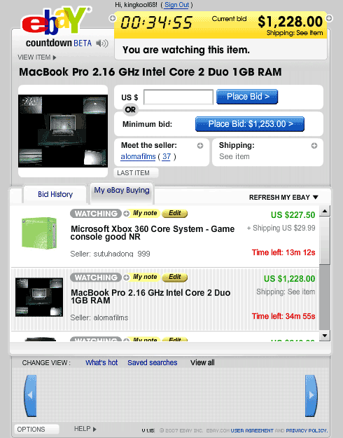
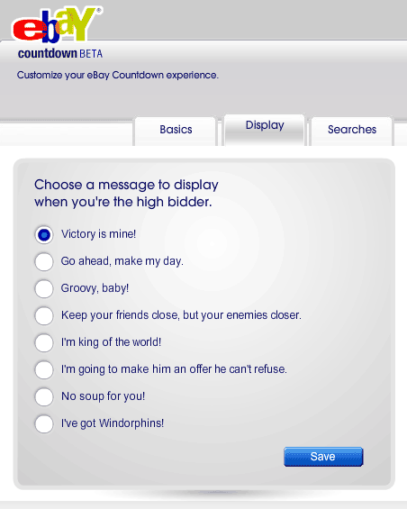

A 20GB Xbox 360! Though it doesn’t include an A/C adapter, A/V cables, or controllers, it was a good deal at $125. After purchasing the most expensive thrift store purchase in my life, I took it to a friend’s house to test it out. It powers up just fine and even included a game, though the game was heavily scratched. Now it is off to eBay to buy the few things needed to get this thing up and running.
This took place at the end of last January but I just found out about it today. A rare species of shark which resembles an eel with a mouthful of needle sharp teeth has been captured and photographed after rising to the surface off the coast of Japan. The creature was identified as a female frilled shark which usually lives 2,000 feet or more under the ocean. Humans can’t tread that deep hence the documentation of the fish has been scarce. Apparently the shark has changed very little since prehistoric times making it a sort of living fossil.
Die-hard Photoshop users will get a kick out of this. David at IronicSans.com wanted to make an image that looked the same in the histogram view. For the laymen in the crowd, a histogram is a bar graph representing all of the tones in an image. Most pro-sumer digital SLR’s come with a histogram view so photographers can check for clipping of colors. In Photoshop you can see the histogram of your image by going to Image -> Adjustments -> Levels. He didn’t get a very interesting image from that as you might imagine.
Then he got the idea to try and create an image in the histogram view. After some tedious tweaking by hand he came up with this rather dull image.
But if you look at the histogram then you will see this.
The explanation of how it was done boggles my mind, although at the heart of it, it is just math. This reminds me of the Aphex Twin song that when viewed on a spectrograph (a way of visualizing sound) you saw a creepy face.
Finally, after all of these years eBay is moving ever so slowly to real time auction tracking. eBay Countdown is the company’s latest feature which uses a slick flash interface to help you track the auctions you are watching in My eBay or have previously bid on. The real-time countdown lets you know how much time is left on your auction down to the second. The biggest benefit is you don’t have to keep constantly refreshing during those heart-pounding final moments. The auction price updates in real-time and shoots up an audio and visual warning to let you know if you are still winning or were just outbid. This can get pretty exciting if you are following a popular auction in the final minutes! If you need to put in a quick bid at the last minute to stay on top you can use the minimum bid button for a one click bid snipe at the next increment allowed. Quick access to photos and shipping information also comes in handy when you are on the fence about a fast-approaching auction.

One of the more stranger options is the ability to choose a character to represent you and a victory message for when you are the high bidder. While fun, I’m still left scratching my head about why you would want to create a virtual facade for yourself. They also include desktop shortcut links which come in the form of exe files whose sole job is to add an icon link to the eBay Countdown pop up window. Couldn’t detailed drag and drop instructions work just as well? Downloading an executable file to put an icon on my desktop seems rather silly. And where is no Adobe AIR support so I can’t launch this as a separate application. The ability to bypass my already crowded browser tab-bar would make this a killer app.

The eBay Countdown web application is a great addition to the online auction giants toolkit for bidders. If you weren’t constantly looking up items to try and scoop up a sweet deal, like I do, you probably will now. The real-time information is a joy to have for serious auction tracking making eBay that much more addictive.
Earlier this morning a friend sent me a link he found on Reddit that pointed to a very large security hole on the Adobe.com website. It has since been patched but I thought I would take some time to explain a little bit about how it worked and how it could have been exploited further. The problem was due to a lack of sanitizing a URL path passed as a query string from the Shockwave download page to a Perl script for back end processing.
What was happening was the path goes up to the root level of the server (the series of ../’s) and then into the local apache configuration files. Here the private encryption key used to encrypt SSL traffic would be exposed.
Whenever you conduct a secure transaction over the web, like giving a website your credit card information for a purchase, the traffic gets encrypted so it cannot be intercepted between the server and your computer. This keeps your confidential information safe and prevents a third party from sniffing your traffic to see what you are sending or receiving. You can tell you are using a secure connection by the yellow lock icon used in most browsers and the https:// instead of http:// in your address bar.
For this connection to work the server needs to have two keys; a public key and a private key. The public key is sent to your computer which it uses to encrypt a random number to send back to the server. A private key is kept on the server which is the only key that can decrypt the random numbers sent from your computer. From this transaction, both parties can generate key material used in encrypting and decrypting data. When an attacker looks at traffic over an SSL connection it looks like completely random and garbled text with no discernable pattern to it. The server and client can easily decrypt the garbled text putting it back to the original plain text.
Releasing the private encryption key of a web server into the wild compromises security allowing a 3rd party to easily decrypt SSL traffic or impersonate the server to perform a phishing attack. Adobe’s security hole wouldn’t directly break anything right away but a malicious user could use the flaw to probe for other weak spots and conduct an attack on those. Such attacks could expose personal data or intercepting sensitive traffic.
When coding a web application it is a good idea to build in a sanitize function that will strip out any non-alphanumeric characters like backslashes and periods. This can be done easily with a regular expression like replace(/\W/ig,””) that is common to most any programming language. This regular expression would change this ../../../../../../../../../usr/local/apache/conf/ssl.key/www.adobe.com.key%00 to this usrlocalapacheconfsslkeywwwadobecomkey00 . For more help with regular expressions check out this great tool I found.
Most web designs use a classic header, columns, and footer layout, so there is no point in slaving over the details of the basic structure when you are starting a new design from scratch. YAML Builder makes the process quick and easy with a simple WYSIWYG online tool to build out your starting point.
You start out with a basic three column layout and from there you can customize it to fit your specific needs. Choose the doc type (I prefer HTML 4.0 Strict), optional base elements, and the number of columns to start out with. You can specify the widths of various elements choosing between a static width or liquid layout and the source order of the columns. Finally, the fun can begin by adding specific elements like headings, paragraphs, and lists to complete your basic web page. It should be noted that adding the specific content is not as straight forward as I would have expected. You need to click on the ‘Add +’ toggle in the upper left corner of the element before you can drop in child elements. Throughout the whole process you can click the ‘Toggle View’ button to see a real time preview of the final rendered code. When you are all done click the ‘Get Code’ button and the builder will display the HTML code, the base CSS code, and even an Internet Explorer bug fix CSS in a slick modal pop up so you can be off to a great cross-browser start.
YAML (Yet Another Multicolumn Layout) is an open source CSS framework meant to get you up and coding quickly while reducing the tedious detail work associated with CSS design. Download Squad recently reviewed the Yahoo CSS Grid Builder tool which does a similar thing but is much less polished. The YAML builder also offers a greater flexibility with your design as well as using less code in the end.
If CSS has left you a bit dizzy in the head or you simply want a quick place to start, the YAML builder is the best place to go to.
Security fanatic and host of the #1 Tech Podcast (Security Now) Steve Gibson, built his own e-commerce system in assembly language. This came from a need and lack of a 3rd party product that offered the features Steve needed. What really intrigued me while listening to Steve on Security Now #109 was how accessible he made his e-commerce system.
The web was designed with a server-client model in mind. This means a server has no means for keeping state, or what information you have previously sent to it. A server spits out pages and has no means to keep track of who sent what. The classic model to solving this problem involved setting client-side cookies using JavaScript to write and read information specific to that user that can be sent back to the server. Steve is a firm believer that scripting is inheritly evil and didn’t want to rely on his potential customers having JavaScript enabled in order to complete a transaction. Instead, Steve came up with a pretty clever method of keeping track of customers as they go through the checkout process.
Steve’s system collects the basic info on the first page of the process and then sends it to the server for validation like does the provided e-mail address look like an e-mail address and is the credit card number properly entered. Steve then takes the customer to a second page where he asks to confirm their e-mail as well as gathering additional data. The trick to keeping track of the previous data entered without using cookies is the use of a hidden field which Steve fills with the previous data encrypted using a secret key on the server and then digitally signed using a cryptographic hash. The result is all of the users data that is essentially useless outside of the server which can then be sent back to Steve, decrypted, and used to fulfill the order.
Now this might sound a little fishy if it weren’t coming from Steve Gibson himself. But this is the guy who wrote the Ultra High Security Password Generator, which is guaranteed to never give the same password twice and is truly random.
I have always had this idea of creating my own e-commerce site to sell my photography and hearing Steve talk about designing and building his own e-commerce solution was really inspiring. You can listen to the 95 minute podcast or read the complete transcript over at GRC.com/securitynow.
Someone who goes by the name of the Etch-A-Sketchist likes to make his art on the classic childhood toy. He doesn’t just do software interfaces recently posting sketches of Master Chief from Halo, Mahmoud Ahmadinejad, and even some from his own imagination. This guy truly has some unique artistic abilities and probably a lot of free time.
Joe Cunningham happened to be in the right place at the right time with his camera after snapping a woman in the process of being mugged. Joe Says…
“It happened very fast in front of me as I was out walking. He shoved her to the ground and they wrestled for her purse. She clung tight and I shouted I was calling the cops. He heard me and gave her bag two more hard yanks and then fled empty-handed into the street. I helped her up and over to the payphone. Once the call was made I sat with her while she waited for the police. Her name is Patricia Yellow Hammer. She was shook up but uninjured save for a scuffed thumb. To pass the time and take her mind off her troubles we had fun making some pictures of random people. By the time the cops arrived, she had her smile back.”
MediaDefender is a company that provides services for large media companies in an effort to stifle peer-to-peer and BitTorrent transfers. The main method used by MediaDefender is to flood the network with fake files of the alleged copyrighted work making a downloaded version worthless to the downloadee as well as wasting their time and bandwidth.
In February, MediaDefender launched a fake video sharing site called Miivi.com. The site was created solely to trap users who uploaded copyrighted material of MediaDefenders clients. Once the news leaked of MediaDefenders honeypot project, Miivi.com was shut down and displays a placeholder page to this day.
On September 14th, internal e-mails of the company were leaked onto BitTorrent by a group called MediaDefender Defenders. The e-mails include various FTP and database logins as well as lists of their decoy/entrapment trackers, decoy strategies, the effectiveness of their fake torrents (in many cases with a breakdown of success, title specific), high and low priority sites, .torrent watchlists, and information on their monitoring of competitors. There was even reaction to TorrentFreak breaking the news about MiiVi.
From: Ben Grodsky
Sent: Tue 03-Jul-07 20:19
To: MIIVI; Randy Saaf; Octavio Herrera; Steve Lyons
Subject: MiiVi got Dugg
Looks like the domain transfer has screwed us over:
http://torrentfreak.com/anti-piracy-gang-launches-their-own
-video-download-site-to-trap-people/
http://digg.com/users/AcePup/news/dugg
-Ben
This is really fucked.
Let’s pull miivi offline.
The 700Mb worth of e-mails were acquired by guessing the password to a Gmail account used as a backup for the company e-mails.
With MediaDefender’s internal e-mails spread out all over the Internet, groups of peer-to-peer loyalists poured over every detail. With various servers exposed MediaDefender Defenders managed to leak the source code of the anti-piracy tool used by MediaDefender to spread their fake files across many peer-to-peer networks. This is a huge blow to the company’s efforts to protect the intellectual property of large media companies as p2p hosts can fortify their systems against floods of fake media and torrent files.
This is a firm warning to any other p2p media protection companies. If you mess with the technologically savy peer to peer groups be prepared for some harsh retaliation. I still believe that there is no effective way to fight piracy on the Internet once it is leaked. Fighting the pirates will only make them multiply and mock you like the Pirate Bay is doing tight now.


{kind=link}